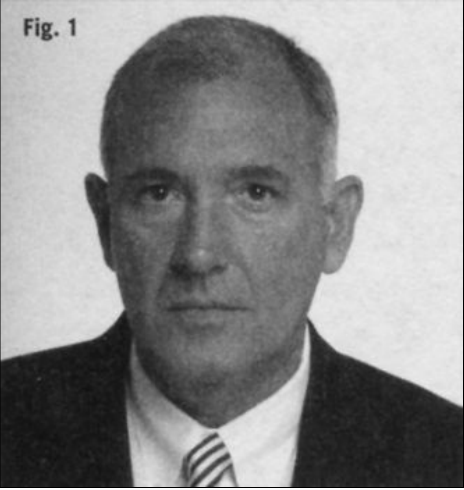
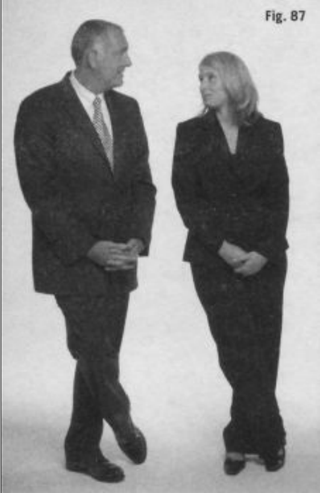
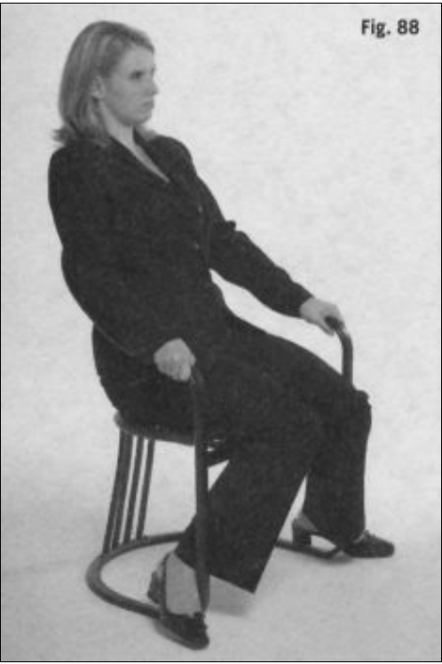
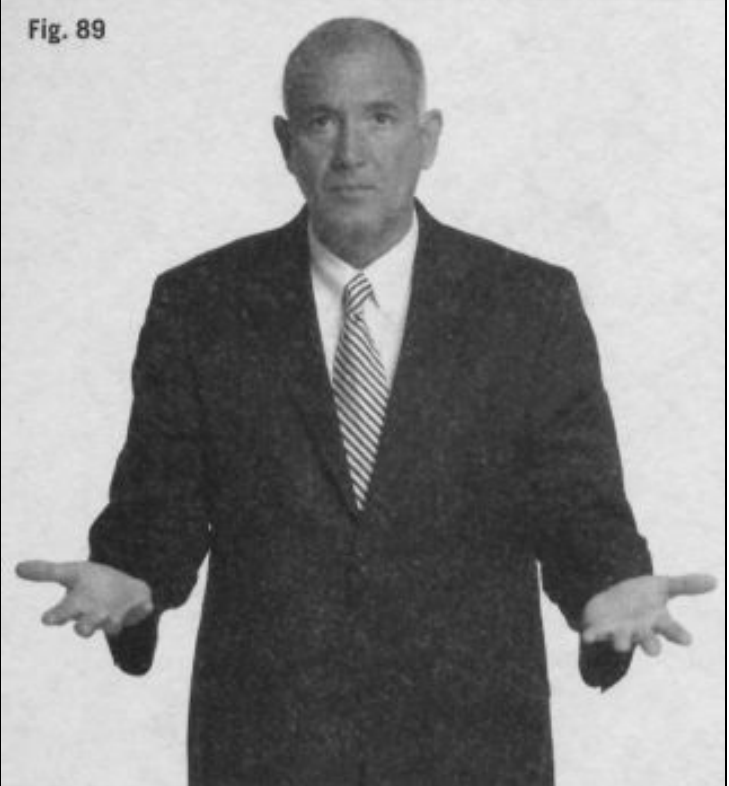
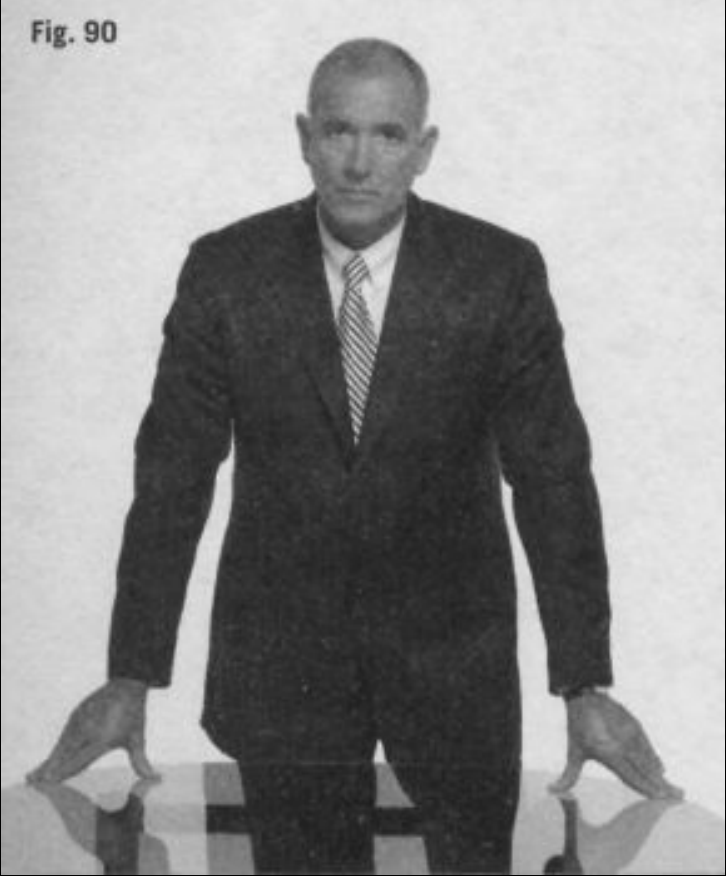

ACAPÍTULO 8CÓMO DETECTAREL ENGAÑO¡Ve con cuidado!lo largo del libro, he mencionado muchos tipos de comportamientos noverbales, las señales corporales que podemos utilizar para comprendermejor los sentimientos, pensamientos e intenciones de los demás. Ahora,espero que estés convencido de que, con estos indicadores no verbales,puedes evaluar con precisión lo que el cuerpo dice en cualquier situación. Sinembargo, hay un tipo de comportamiento humano que es difícil deinterpretar, y ése es el engaño.
Quizá supongas que, como agente del FBI con una larga carrera y al que enocasiones han llamado detector de mentiras humano, puedo distinguir elengaño con relativa facilidad, e incluso enseñarte a cómo convertirte en unpolígrafo personal en un breve periodo de tiempo. ¡Nada más lejos de larealidad! En verdad, es extremadamente difícil detectar el engaño, bastantemás que conseguir una interpretación precisa de los comportamientos que hecomentado a lo largo de este libro.
Precisamente debido a mi experiencia como agente del FBI dedicado alanálisis de la conducta, y a que me he pasado toda mi carrera intentando detectar mentiras, reconozco las dificultades que supone evaluar conprecisión un comportamiento engañoso. Es también por este motivo por loque he decidido dedicar un capítulo completo, ya para acabar este libro, a laevaluación y aplicación realista de los comportamientos no verbales paradetectar el engaño. Se han escrito muchos libros sobre este tema que hacenque parezca fácil, incluso para los principiantes. ¡Te aseguro que no es así!
Creo que ésta es la primera vez que un agente del orden público, que hatrabajado en el contraespionaje, que cuenta con una considerable experienciaen este campo y que aún imparte clases en los servicios de inteligencia, da unpaso adelante y hace esta advertencia: la mayoría de la gente, tanto legoscomo profesionales, no es muy buena a la hora de detectar mentiras. ¿Por quéhago esta afirmación? La hago porque, por desgracia, he visto a demasiadosinvestigadores malinterpretar los comportamientos no verbales a lo largo delos años, haciendo que gente inocente se sintiera culpable o innecesariamenteincómoda. También he visto, tanto a principiantes como a profesionales,hacer afirmaciones que son ultrajantes y arruinar vidas con ello. Demasiadaspersonas han ido a la cárcel tras hacer confesiones falsas por el simple hechode que un agente confundió una respuesta causada por la tensión con unamentira. Los periódicos están repletos de historias horribles, como la delcorredor de Central Park en Nueva York, en el que los agentes confundierongestos de estrés con una mentira y presionaron al inocente a confesar (Kassin,2004, 172-194; Kassin, 2006, 207-227). Tengo la esperanza de que loslectores de este libro tengan una imagen más realista y honesta de lo quepuede o no lograrse a través del enfoque no verbal para detectar el engaño, yque, armados con este conocimiento, utilicen un enfoque más razonado yprudente para declarar cuándo una persona está diciendo o no la verdad.
Todos tenemos interés en la verdad. La sociedad funciona basándose en lasuposición de que la gente cumple su palabra, que la verdad prevalece sobreel hábito de mentir. En su mayor parte, es así. Si no lo fuera, las relacionestendrían una breve vida útil, el comercio cesaría y la confianza entre padres ehijos estaría destruida. Todos dependemos de la sinceridad porque, cuando laverdad está ausente, nosotros y la sociedad sufrimos. Cuando Adolf Hitlermintió a Neville Chamberlain, no hubo «paz en nuestros tiempos» y másde cincuenta millones de personas pagaron el precio con sus vidas. CuandoRichard Nixon engañó a la nación, destruyó el respeto que muchos sentíanpor el presidente. Cuando los ejecutivos de Enron mintieron a sus empleados,miles de vidas quedaron arruinadas de la noche a la mañana. Contamos conque nuestro gobierno y las instituciones sean honestos y sinceros.Necesitamos y esperamos que nuestros amigos y nuestra familia seansinceros. La verdad es esencial en todas las relaciones, ya sean personales,profesionales o civiles.
Tenemos suerte de que, en general, la gente es honesta y la mayoría de lasmentiras que oímos a diario son, en realidad, mentiras sociales o piadosas,que se nos dicen para protegernos de la verdadera respuesta a preguntascomo: «¿Esta ropa me hace más gordo?». Indudablemente, cuando se trata deasuntos más serios, necesitamos evaluar y determinar la verdad de lo que sedice. Durante miles de años, la gente ha estado recurriendo a adivinos y atodo tipo de dudosas técnicas, como colocar un cuchillo caliente en la lenguade una persona, para detectar el engaño. Incluso, hoy en día, algunas organizaciones usan muestras de escritura, análisis de tensión de la voz o elpolígrafo para descubrir mentiras. Pero todos estos métodos tienen unosresultados cuestionables. No hay ningún método, máquina, prueba ni personaque sea preciso al 100% a la hora de descubrir el engaño. Incluso el aclamadopolígrafo es exacto sólo del 60 al 80% de las veces, dependiendo de quién lomaneje (Ford, 1996, 230-232; Cumming, 2007).
La verdad es que identificar el engaño es muy difícil. De hecho, repetidosestudios que empezaron en los años ochenta muestran que la mayoría denosotros, incluyendo jueces, abogados, médicos, agentes de policía, agentesdel FBI, políticos, profesores, madres, padres y cónyuges, no somos mejoresque el azar (50%) a la hora de detectar el engaño (Ford 1996, 217; Ekman,1991, 162). Esto es inquietante, pero cierto. A la mayoría de la gente,incluyendo a los profesionales, no se les da mejor percibir correctamente lafalsedad que si lo echáramos a cara o cruz (Ekman y O’Sullivan, 1991, 913-920). Incluso aquellos que están verdaderamente dotados para detectar elengaño (probablemente menos de un 1% de la población) rara vez están en locierto más del 60% de las veces. Piensa en los innumerables miembros de losjurados que deben decidir entre honestidad o falsedad y culpabilidad oinocencia, basándose en lo que ellos creen que son comportamientos deengaño. Por desgracia, esos comportamientos que se confunden la mayorparte del tiempo con la falsedad son, fundamentalmente, manifestaciones detensión, no de engaño (Ekman, 1991, 187-188). Ésa es la razón por la que yovivo siguiendo la consigna que me enseñaron quienes más saben de esto: noexiste un único comportamiento que sea indicativo de engaño, ni uno(Ekman, 1991, 162-189).
Esto no significa que tengamos que abandonar nuestros esfuerzos porestudiar el engaño y por observar los comportamientos que, en contexto, losugieren. Mi consejo es establecerse un objetivo realista: ser capaz deinterpretar los comportamientos no verbales con claridad y fiabilidad, y dejarque el cuerpo te diga qué está pensando, sintiendo o pretendiendo. Éstos sonobjetivos razonables que, al final, no sólo te ayudarán a comprender a losdemás con más eficacia (¡la mentira no es el único comportamiento que valela pena detectar!), sino que también te darán pistas del engaño gracias a tusobservaciones.
Si te estás preguntando por qué es tan difícil identificar el engaño, piensaen este viejo dicho: «La práctica hace al maestro». Aprendemos a mentir auna edad tan temprana, y lo hacemos tan a menudo, que nos convertimos enmaestros a la hora de decir falsedades de un modo convincente. Comoejemplo, piensa con qué frecuencia has oído algo como: «Diles que noestamos en casa», «Pon una sonrisa de fiesta» o «No le digas a tu padre loque pasó o nos meteremos los dos en un lío». Como somos animales sociales,no mentimos sólo por nuestro propio beneficio, sino también por el beneficiodel otro (Vrij, 2003, 3-11). Mentir puede ser un modo de evitar tener que daruna larga explicación, un intento de evitar el castigo, un atajo a un doctoradode mentira, o puede usarse simplemente para ser agradable. Incluso loscosméticos y la ropa con relleno nos ayudan a engañar. En esencia, paranosotros, los humanos, mentir es una «herramienta para la supervivenciasocial» (St-Yves y Tangray, 2007).
Durante mi último año en el FBI, presenté mi investigación ydescubrimientos sobre el engaño, incluyendo una revisión de la bibliografíade los últimos cuarenta años. Esto dio lugar a la publicación de un artículotitulado «Un modelo de cuatro enfoques para detectar el engaño; unparadigma alternativo para los interrogatorios» (Navarro, 2003, 19-24). Estedocumento presentaba un nuevo modelo para identificar la falsedad basadoen el concepto de la estimulación límbica y nuestras muestras de bienestar ymalestar, o el enfoque del malestar/bienestar. Planteado de forma sencilla,sugerí que, cuando decimos la verdad y no tenemos preocupaciones,tendemos a sentirnos más cómodos que cuando mentimos o estamospreocupados por que nos pillen, ya que albergamos un «conocimientoculpable». El modelo también muestra cómo tendemos a enfatizar cuandoestamos cómodos y somos sinceros, y cómo no lo hacemos cuando no es así.
Actualmente, este modelo se utiliza en todo el mundo. Aunque su objetivoera enseñar a los agentes del orden público a detectar el engaño durante lasinvestigaciones, también es aplicable a cualquier tipo de interacción personal,en el trabajo, en casa o en cualquier lugar en el que distinguir la mentira de laverdad sea importante. Una vez te haya mostrado este modelo, estarásexcepcionalmente preparado gracias a lo que ya has aprendido en loscapítulos anteriores.
A aquellos que mienten o son culpables y deben cargar con elconocimiento de sus mentiras o delitos les resulta difícil lograr el bienestar, ysu tensión y angustia puede observarse con facilidad. Intentar ocultar su culpao engaño los obliga a soportar una carga cognitiva muy angustiosa mientrasse esfuerzan por inventar respuestas a lo que, de otro modo, serían preguntassencillas (DePaulo et al., 1985, 323-370).
Cuanto más cómoda esté una persona hablando contigo, más fácil te serádetectar los gestos no verbales de malestar asociados con el engaño. Tuobjetivo es establecer un ambiente de gran comodidad durante el inicio deuna interacción o durante «el periodo de construcción de una relación». Estote ayudará a establecer, durante ese periodo, una línea base decomportamientos a fin de que la persona, con un poco de suerte, no se sientaamenazada.
En la búsqueda de la detección del engaño, debes ser consciente de tuimpacto en las acciones de un supuesto mentiroso y darte cuenta de que elmodo en que te comportes afectará al comportamiento de la otra persona(Ekman, 1991, 170-173). Cómo hagas las preguntas (de un modo acusador),dónde te sientes (demasiado cerca) y cómo mires a la persona (condesconfianza) podrá hacer que se desvanezca el apoyo o desbaratar su nivelde bienestar. Está confirmado que invadir el espacio de la persona, actuar condesconfianza, mirarla del modo equivocado o formularle preguntas con untono acusador es perjudicial para el interrogatorio. Ante todo, el hecho dedesenmascarar las mentiras no es una cuestión de identificar la falsedad, sinomás bien de cómo se observa y se interroga a los demás para detectar el engaño. Se trata de recopilar información no verbal. Cuanto más veas(agrupaciones de comportamientos), más confianza puedes tener en tusobservaciones y más posibilidades tendrás de percibir cuándo alguien no estásiendo sincero.
Incluso si estás buscando activamente el engaño durante una discusión oun interrogatorio, tu papel debería ser, en la medida de lo posible, neutral, nodesconfiado. Recuerda que, en cuanto te muestres desconfiado, estarásafectando a cómo te responderá la persona. Si le dices: «Estás mintiendo» o«Creo que no estás diciendo la verdad» o, incluso, si te limitas a mirar a esapersona con desconfianza, influirás en sus comportamientos (Vrij, 2003, 67).El mejor modo de actuar es preguntar por detalles que aclaren cada vez másel asunto, como un sencillo: «No lo entiendo» o «¿Puedes explicarme denuevo cómo sucedió?». A menudo, el simple hecho de hacer que alguienamplíe su afirmación bastará para distinguir, finalmente, el engaño de laverdad. Ya estés intentando confirmar la validez de las credenciales dealguien durante una entrevista de trabajo, averiguar la verdad sobre un roboen la empresa, decidir si participas en una importante discusión sobrefinanzas o descubrir una posible infidelidad de tu cónyuge, el hecho de quemantengas la calma es esencial. Intenta mantenerte tranquilo mientras haceslas preguntas, no actúes con recelo y adopta una actitud cómoda y nadacrítica. De esa forma, será menos probable que la otra persona se ponga a ladefensiva y no se muestre dispuesta a darte la información.
El bienestar se observa fácilmente durante las conversaciones confamiliares y amigos. Percibimos cuándo la gente se lo está pasando bien oestá cómoda en nuestra presencia. Sentada a la mesa, la gente que se siente
cómoda apartará los objetos para que nada bloquee su visión. Con el tiempo,seguramente se acercarán más los unos a los otros para no tener que hablartan alto. Los individuos que están cómodos muestran sus cuerpos másabiertamente, exhibiendo más sus torsos y la parte interior de los brazos y laspiernas (permiten el acceso ventral o frontal). En presencia de desconocidos,es más difícil lograr el bienestar, sobre todo en situaciones estresantes comouna entrevista formal o una declaración. Por este motivo, es importante que teesfuerces al máximo para crear una zona de bienestar desde el principio de tuinteracción con otro individuo.
Cuando estamos cómodos, debería haber sincronía en nuestrocomportamiento no verbal. El ritmo de la respiración de dos personas queestán cómodas será similar, al igual que el tono de su voz y su conductageneral. Piensa en una pareja sentada en una cafetería, totalmente a gusto,inclinándose hacia delante para estar más cerca el uno del otro. Si unapersona está de pie mientras habla con nosotros, inclinada hacia un lado conlas manos en los bolsillos y los pies cruzados, lo más probable es quenosotros hagamos lo mismo, Al imitar su comportamiento,inconscientemente estamos diciendo: «Estoy cómodo contigo».
En un interrogatorio o en cualquier otra situación en la que se discuta untema difícil, con el tiempo, si hay sincronía, el tono de cada parte deberíaimitar al de la otra (Cialdini, 1993, 167-207). Si no existe armonía entre laspersonas que participan, no habrá esta sincronía y esto será perceptible.Seguramente se sentarán de un modo diferente, hablarán de un modo y conun tono distinto o, al menos, sus expresiones no concordarán o serántotalmente dispares. La asincronía es una barrera para la comunicación eficazy un serio obstáculo para el éxito de un interrogatorio o de una discusión.
Si te muestras relajado y desenvuelto durante una conversación o unaentrevista, mientras que la otra parte mira continuamente el reloj o se sienta de un modo tenso o carente de movimientos (conocido como un congeladoinstantáneo), esto sugiere que no hay bienestar, aunque para el ojo noentrenado pueda parecer que todo está bien (Knapp y Hall, 2002, 321;Schafer y Navarro, 2004, 66). Si la persona busca interrupciones o hablareiteradamente de acabar la conversación, éstos también son signos demalestar.
Obviamente, las muestras de bienestar son más comunes en personas quedicen la verdad; no hay tensión que ocultar ni un conocimiento culpable quelos incomode (Ekman, 1991, 185). Por tanto, deberías buscar signos demalestar, cuándo se producen y en qué contexto, para valorar un posibleengaño.
Mostramos malestar cuando no nos gusta lo que nos está sucediendo, loque vemos u oímos, o cuando nos vemos obligados a hablar de cosas quepreferiríamos mantener en secreto. Lo mostramos, en primer lugar, en nuestrafisiología, debido a la estimulación del cerebro límbico. El ritmo de nuestrocorazón se acelera, se nos eriza el vello, sudamos más y respiramos másrápido. Además de las respuestas fisiológicas, que son espontáneas(automáticas) y no requieren ningún pensamiento por nuestra parte, nuestrosorganismos manifiestan malestar de un modo no verbal. Tendemos a movernuestros cuerpos en un esfuerzo por bloquear o distanciarnos, nosrecolocamos, sacudimos los pies, nos movemos nerviosos, giramos lascaderas o tamborileamos con los dedos cuando estamos asustados, nerviososo considerablemente incómodos (De Becker, 1997, 133). Todos hemospercibido estos comportamientos de malestar en otros, ya sea durante unaentrevista de trabajo, en una cita o cuando se nos pregunta sobre un asunto grave en el trabajo o en casa. Recuerda que estas acciones no indicannecesariamente engaño; sin embargo, sí que muestran que una persona estáincómoda en la actual situación por cualquier serie de motivos.
Si estás intentando observar el malestar como un indicador potencial deengaño, la mejor situación es aquella en la que no hay ningún objeto (comomuebles, mesas, escritorios o sillas) entre tú y la persona a la que estásobservando o entrevistando. Como ya he comentado que las extremidadesinferiores son especialmente sinceras, si la persona está detrás de unescritorio o mesa, intenta que se siente en otro lugar, ya que un obstáculo asíbloqueará gran parte (casi el 80%) de la superficie corporal que deberíasobservar. De hecho, ten en cuenta que los mentirosos usan obstáculos uobjetos (como una almohada, un vaso o una silla) para formar una barreraentre tú y ellos (ver recuadro 57). El uso de objetos es una señal de que elindividuo desea distancia, separación y ocultarse parcialmente porque estáabriéndose menos, cosa que va ligada al hecho de sentirse incómodo o,incluso, de mentir.
A propósito, en un interrogatorio o cualquier conversación en la que estésinteresado en confirmar la verdad o autenticidad de las afirmaciones de unapersona, seguramente obtendrás más información no verbal si permanecéis depie. Se pueden captar muchos comportamientos de pie que simplementepasan desapercibidos cuando estamos sentados. Aunque permanecer unprolongado periodo de tiempo en esa postura puede resultar poco viable opoco natural en algunas situaciones, como en una entrevista de trabajo, amenudo aún se presentan oportunidades de observar comportamientos de pie,como cuando saludamos o esperamos que nos den una mesa para comer.
Cuando estamos incómodos con aquellos que están a nuestro alrededor,tendemos a distanciarnos de ellos. Esto es especialmente cierto en individuosque intentan engañarnos. Incluso cuando estamos sentados al lado de alguien,nos inclinaremos alejándonos de aquellos con los que nos sentimosincómodos, a menudo apartando el torso o los pies lejos de esa persona ohacia la salida. Estos comportamientos pueden producirse duranteconversaciones, bien debido a que la relación que existe entre las partes esdifícil o está deteriorada, o por el tema de discusión.
Entre otros signos de malestar observados en las personas durante unaconversación difícil o perturbadora son frotarse la frente cerca de las sienes,apretarse la cara, tocarse el cuello o acariciarse la parte de detrás de la cabezacon la mano. La gente puede mostrar su disgusto poniendo los ojos en blancoen un gesto de falta de respeto, quitándose pelusas (acicalándose), hablandoen tono condescendiente a la persona que le hace las preguntas, dandorespuestas cortas, oponiendo resistencia, volviéndose hostil, sarcástico e incluso mostrando microgestos con connotaciones indecorosas como levantarel dedo corazón (Ekman, 1991, 101-103). Imagina a un adolescente altivo eindignado, a quien su madre interroga sobre un nuevo y caro suéter porquesospecha que lo ha robado, y tendrás una clara idea de todas las maniobrasdefensivas que una persona incómoda puede llegar a realizar.
Los mentirosos, cuando hacen afirmaciones falsas, rara vez te tocarán obuscarán el contacto físico contigo. Descubrí que esto era especialmentecierto en informadores que se habían echado a perder y pasaban informaciónfalsa por dinero. El contacto lo establece con más frecuencia la gente sincerapara enfatizar. Por el contrario, el distanciamiento ayuda a aliviar el nivel deinquietud que alguien deshonesto está sintiendo. Cualquier disminución delgrado de contacto observado en una persona que está manteniendo unaconversación, sobre todo cuando escucha o responde preguntas críticas, esmás probable que sea indicativo de engaño que de lo contrario (Lieberman,1998, 24). Si es posible y apropiado, deberías considerar sentarte cerca de unser querido cuando le preguntes sobre algo serio o incluso sostener la manode tu hijo mientras discutís un asunto complicado. De este modo, notarás másfácilmente los cambios en el contacto durante la conversación.
Sin embargo, el hecho de que alguien no toque no indica automáticamenteque esté mintiendo y, además, el contacto físico es claramente más apropiadoy esperado en algunas de nuestras relaciones interpersonales que en otras. Escierto que una ausencia de contacto puede significar que no le caes bien aalguien, ya que tampoco tocamos a aquellos a los que no respetamos o por losque sentimos desprecio. Lo esencial es que es importante valorar lanaturaleza y la antigüedad de la relación a la hora de discernir el significadode dicho comportamiento de distanciamiento.
Cuando observes el rostro de alguien en busca de signos de bienestar omalestar, busca comportamientos sutiles como una mueca o una mirada de desdén (Ekman, 1991, 158-169). También fíjate en si la boca de la personatiembla o se retuerce a causa del malestar durante una discusión seria.Cualquier expresión facial que dure demasiado tiempo o que se prolongue noes normal, ya sea una sonrisa, un fruncimiento de ceño o una mirada desorpresa. Este comportamiento artificial durante una conversación o uninterrogatorio pretende influir en las opiniones y carece de autenticidad. Amenudo, cuando se sorprende a una persona haciendo algo malo o mintiendo,mantendrá la sonrisa durante lo que parece una eternidad. No obstante, másque indicar bienestar, este tipo de sonrisa falsa es, en realidad, una muestra demalestar.
Cuando no nos gusta algo que oímos, ya sea una pregunta o una respuesta,con frecuencia cerramos los ojos como si así bloqueáramos lo que acabamosde escuchar. Las diversas formas que adoptan los mecanismos de bloqueovisual son análogas a los gestos de cruzar las manos sobre el pecho o dar laespalda a aquellos con los que no estamos de acuerdo. Estas manifestacionesde bloqueo se realizan inconscientemente y se producen a menudo, sobretodo durante las entrevistas formales relacionadas con un tema específico. Elpestañeo también se observa en momentos en los que un tema en particularprovoca angustia (Navarro y Schafer, 2001, 10).
Todas estas manifestaciones de los ojos son poderosas pistas acerca decómo se está registrando la información o qué preguntas son problemáticaspara el receptor. Sin embargo, no son necesariamente indicadores directos deengaño. El hecho de que haya poco o ningún contacto visual no es indicativode engaño (Vrij, 2003, 38-39). Por los motivos ya comentados en el capítuloanterior, esta idea no es más que una tontería.
Ten en cuenta que los depredadores y los mentirosos habituales, enrealidad, establecen mayor contacto visual que la mayoría de los individuos,y te mirarán directamente a los ojos. Las investigaciones muestran claramente que la gente maquiavélica (como psicópatas, estafadores y mentirososhabituales) aumentarán el contacto visual durante el engaño (Ekman, 1991,141-142). Quizá este incremento del contacto visual sea usado de un modoconsciente por estos individuos debido a la creencia tan común (aunqueerrónea) de que mirar a alguien directamente a los ojos es un signo desinceridad.
Sé consciente de que hay diferencias culturales en las manifestaciones delcontacto visual y la mirada que deben tenerse en cuenta en cualquier intentode detectar el engaño. Por ejemplo, a los individuos de determinadas culturas(como afroamericanos y latinoamericanos) se les enseña a bajar la miradaante la autoridad paterna en señal de respeto cuando se les pregunta o se lesreprende (Johnson, 2007, 280-281).
Toma nota de los movimientos de la cabeza de aquellos con los que estáshablando. Si la cabeza de una persona empieza a moverse, afirmando onegando mientras habla, y los movimientos son coherentes con lo que estádiciendo, puedes confiar en que la afirmación es sincera. Si, por el contrario,el movimiento o las sacudidas de la cabeza van con retardo o se producendespués de haber hablado, lo más probable es que la afirmación seainventada. Aunque puede que sea muy sutil, el movimiento retardado es unintento de validar aún más lo que se ha dicho y no es parte del flujo natural dela comunicación. Además, los movimientos sinceros de la cabeza deberíanconcordar con las afirmaciones o negaciones verbales. Si un movimiento dela cabeza no concuerda con la afirmación de la persona, o dice lo contrario,puede indicar engaño. Aunque, normalmente, se trata de movimientos mássutiles que exagerados, esta incongruencia entre las señales verbales y las noverbales sucede más a menudo de lo que pensamos. Por ejemplo, alguienpuede decir: «Yo no lo hice», mientras su cabeza asiente levemente.
Cuando estamos incómodos, el cerebro límbico toma el control y el rostropuede ruborizarse o perder el color. Durante una conversación difícil,también puedes observar un aumento en la transpiración o en el ritmo de larespiración; fíjate en si la persona se enjuga perceptiblemente el sudor ointenta controlar la respiración en un esfuerzo por mantener la calma.Cualquier temblor del cuerpo, ya sea de las manos, los dedos o los labios, ocualquier intento de ocultar o contener las manos o los labios (haciéndolosdesaparecer o apretándolos) puede ser un indicador de malestar o engaño,sobre todo si ocurre después de que el nerviosismo normal debiera haberpasado.
La voz de una persona puede quebrarse o parecer incoherente cuando diceuna mentira. Tragar saliva se hace difícil porque la garganta se seca a causade la tensión, así que mantente atento a signos que te indiquen que traga condificultad. Esto puede desvelarse por un repentino movimiento de la nuez yes posible que vaya acompañado de uno o repetidos carraspeos para aclararsela garganta, todo ello indicativo de malestar. Recuerda que estoscomportamientos son únicamente indicadores de angustia, no garantías deengaño. He visto a gente muy sincera testificar en el tribunal y manifestartodos estos comportamientos simplemente porque estaban nerviosos, noporque estuvieran mintiendo. Yo mismo, a pesar de llevar años testificandoen tribunales estatales y federales, aún me pongo nervioso cuando estoy en elestrado, de modo que los signos de tensión y estrés siempre tienen quedescifrarse en su contexto.
Cuando interrogaba a sospechosos, durante mis años en el FBI, buscabacomportamientos apaciguadores para que me ayudaran a orientar mis preguntas y para valorar qué era especialmente estresante para el sujeto al queinterrogaba. Aunque los apaciguadores por sí solos no son una pruebadefinitiva de engaño (ya que pueden manifestarse en gente inocente que estánerviosa), sí que proporcionan una pieza del rompecabezas para determinarqué está pensando o sintiendo verdaderamente una persona.
A continuación, te presento una lista de doce cosas que yo hago y losfactores que tengo en cuenta cuando quiero interpretar gestos no verbalesapaciguadores en interacciones interpersonales. Puede que quieras consideraruna estrategia similar cuando interrogues a otros o converses con ellos, ya seaen una investigación formal, una conversación seria con un miembro de lafamilia o una interacción con un socio de negocios.
En lo que se refiere a las señales corporales que nos alertan de laposibilidad de engaño, deberías fijarte en los comportamientos no verbales enlos que haya sincronía y énfasis.
Anteriormente, en este capítulo, he comentado la importancia de lasincronía como un modo de evaluar el bienestar en las interaccionesinterpersonales. Sin embargo, la sincronía también es importante para evaluarel engaño. Búscala entre lo que se dice verbalmente y no verbalmente, entrelas circunstancias del momento y lo que el sujeto está diciendo, entre sucesosy emociones, e, incluso, entre el tiempo y el espacio.
Cuando a una persona se le pregunta y contesta afirmativamente, deberíahacer un movimiento de cabeza congruente que apoye de inmediato lo quedice; ese gesto no debería ir con retardo. La falta de sincronía se muestracuando una persona dice: «Yo no lo hice», mientras asiente con la cabeza enun movimiento afirmativo. Asimismo, la asincronía se demuestra cuando aun hombre se le pregunta: «¿Mentiría sobre esto?», y su cabeza hace un leveasentimiento mientras responde: «No». Al darse cuenta de que ha dado esepaso en falso, la gente cambiará radicalmente los movimientos de la cabeza en un intento por solucionar el error. Cuando se observa un comportamientoasincrónico, parece artificial y patético. Con mucha frecuencia, una mentira,como un falso «yo no lo hice», va seguida de un evidente retardo y unmovimiento de cabeza negativo menos enfático. Estos comportamientos noson sincrónicos y, por lo tanto, es más probable que correspondan a unengaño porque muestran malestar al realizarlos.
También debería haber sincronía entre lo que se dice y los acontecimientosdel momento. Por ejemplo, cuando los padres denuncian el supuestosecuestro de un hijo, debería haber sincronía entre el suceso (secuestro) y susemociones. La madre y el padre consternados deberían estar pidiendo a gritosla ayuda de las fuerzas del orden público, resaltando cada detalle, sintiendo laprofundidad de la desesperación, ávidos por ayudar y dispuestos a repetir yrepetir la historia, incluso a riesgo personal. Cuando estos informes losrealizan individuos sosegados, más preocupados por dar una versiónparticular de la historia, que no manifiestan muestras emocionales coherentes,o que están más preocupados por su propio bienestar y por cómo se los ve,nos encontramos ante un comportamiento que está totalmente fuera desincronía con las circunstancias y que no concuerda con la sinceridad.
Por último, debería haber sincronía entre los sucesos, el momento y ellugar. Una persona que retrasa la denuncia de un suceso importante, como elhecho de que un amigo, cónyuge o hijo se haya ahogado, o que viaja a otrajurisdicción para denunciar el suceso debería estar merecidamente bajosospecha. Además, la denuncia de acontecimientos que habría sido imposibleobservar desde la posición ventajosa de la persona es asincrónica y, por tanto,sospechosa. Los individuos que mienten no piensan en cómo encaja lasincronía en la ecuación, y sus gestos no verbales y sus historias al final lesfallan. Lograr la sincronía es una forma de bienestar, y, como hemos visto,juega un papel importante durante los interrogatorios policiales y la denuncia de delitos; pero también crea el marco para conversaciones positivas yprósperas sobre todo tipo de temas serios en los que es importante detectar elengaño.
Cuando hablamos, utilizamos de un modo natural varias partes de nuestrocuerpo, como las cejas, la cabeza, las manos, los brazos, el torso, las piernasy los pies, para enfatizar un punto sobre el cual nuestras emociones sonintensas o profundas. Es importante fijarse en los gestos de énfasis, porqueson manifestaciones universales que la gente exhibe cuando está siendosincera. El énfasis es la contribución del cerebro límbico a la comunicación,un modo de hacer saber a los demás con qué intensidad sentimos. Por elcontrario, cuando el cerebro límbico no respalda lo que decimos, enfatizamosmenos o nada en absoluto (Lieberman, 1998, 37). Los mentirosos utilizan suscerebros cognitivos para decidir qué decir y cómo mentir, pero rara vezpiensan en la presentación de la mentira. La mayoría de la gente, cuando seve forzada a mentir, no es consciente de cuánto énfasis o acentuación hay enlas conversaciones diarias. Cuando los mentirosos intentan inventar unarespuesta, su énfasis no se ve natural o llega con retardo; rara vez enfatizanen el momento adecuado o deciden hacerlo sólo en asuntos relativamentepoco importantes.
Enfatizamos tanto verbal como no verbalmente. Verbalmente, lo hacemosa través de la voz, el tono o la repetición. También enfatizamos noverbalmente, y estos comportamientos pueden ser incluso más exactos yútiles que las palabras cuando se intenta detectar la verdad o la falsedad enuna conversación o en un interrogatorio. La gente que normalmente usa lasmanos cuando habla acompaña sus comentarios con gestos de éstas, e incluso puede llegar a golpear un escritorio al enfatizar. Otros individuos acentúansus palabras con las puntas de los dedos, bien haciendo gestos con ellos otocando cosas. Los comportamientos de las manos complementan losdiscursos sinceros, los pensamientos y los verdaderos sentimientos (Knapp yHall, 2002, 277-284). Arquear las cejas (movimiento rápido de las cejas) yabrir mucho los ojos son también formas de enfatizar algo (Morris, 1985, 61;Knapp y Hall, 2002, 68).
Se produce otro tipo de manifestación de énfasis cuando alguien inclina eltorso hacia delante, mostrando interés. Empleamos gestos que desafían lagravedad, como elevarnos sobre la parte anterior de la planta del pie, cuandoexpresamos algo importante o cargado de emoción. Si la persona estásentada, enfatizará levantando repentinamente la rodilla al resaltar puntosimportantes, y puede mostrar un mayor énfasis golpeándola con la mano,mientras la alza, indicando exaltación. Los gestos que desafían la gravedadson representativos de énfasis y de verdaderos sentimientos, algo que losmentirosos rara vez muestran.
En contraste, la gente quita énfasis o revela falta de compromiso con loque dice cuando habla por detrás de sus manos (hablando mientras se cubre laboca) o manifestando una expresividad facial limitada. La gente controla surostro y realiza otras manifestaciones de retirada o restricción demovimientos cuando no se siente vinculada con lo que dice (Knapp y Hall,2002, 320; Lieberman, 1998, 37). Los mentirosos, a menudo, muestran gestospensativos y de deliberación, como llevarse los dedos a la barbilla oacariciarse las mejillas, como si aún estuvieran pensando en lo que decir. Estocontrasta mucho con los individuos sinceros que enfatizan lo que dicen. Losmentirosos invierten tiempo evaluando lo que expresan y cómo esto esrecibido por los demás, lo cual no concuerda con el comportamiento sincero.
A continuación, te presento varios detalles específicos en los que podrásfijarte cuando examines el énfasis como un medio para detectar un posibleengaño.
Como Aldert Vrij y otros han comentado, la ausencia de movimiento delos brazos y la falta de énfasis parecen indicar que existe engaño. El problemaes que no hay modo de evaluar esto, sobre todo en una situación pública osocial. No obstante, esfuérzate por observar cuándo ocurre y fíjate en quécontexto se produce, especialmente si tiene lugar después de que se hayasacado a relucir un tema importante (Vrij, 2003, 25-27). Cualquier cambiorepentino en el movimiento refleja actividad cerebral. Cuando los brazospasan de estar animados a quedarse quietos, hay una razón, ya seaabatimiento o, posiblemente, engaño.
En los interrogatorios, me he fijado que los mentirosos tienden a mostrarmenos el gesto de formar un triángulo con las puntas de los dedos. Tambiénme fijo en los nudillos blancos del individuo que se aferra al brazo de la sillade una forma fija, como si estuviera en un «asiento de eyección». Pordesgracia, para esta persona es imposible salir eyectada para evitar ladiscusión. Muchos investigadores criminales han descubierto que elcomportamiento de mantener la cabeza, el cuello, los brazos y las piernas enel sitio sin apenas moverse, y aferrar las manos y los brazos al brazo de la silla, concuerda en gran medida con aquellos que están a punto de engañar pero de nuevo, no es definitivo (Schafer y Navarro, 2003, 66)
Curiosamente, cuando un individuo hace una afirmación que es falsa,evitará tocar no sólo a otras personas, sino también objetos, como una mesa.Nunca he visto ni oído a alguien que estuviera mintiendo gritar: «Yo no lohice», mientras golpeaba la mesa con el puño. Normalmente, lo que he vistoson afirmaciones muy débiles y sin énfasis acompañadas por gestosigualmente suaves. La gente que está mintiendo no se siente vinculada con loque está diciendo ni tiene confianza en ello. Aunque su cerebro pensante(neocórtex) decidirá qué decir para engañar, el cerebro emotivo (el sistemalímbico, la parte sincera del cuerpo) simplemente no se involucrará en latreta, y, por lo tanto, no enfatizará sus afirmaciones usando comportamientosno verbales (como gestos). Es difícil hacer caso omiso de los sentimientos delcerebro límbico. Intenta dedicar una amplia sonrisa a alguien que no te guste.Es extremadamente difícil hacerlo. Y así como sucede con una sonrisa falsa ofingida, las afirmaciones falsas vienen con gestos no verbales débiles opasivos.
El gesto de colocar los brazos estirados hacia delante, con las palmas haciaarriba, se conoce como gesto rogativo (o «de rezo»). Aquellos que rezan colocan las palmas hacia arriba para pedir piedad a Dios. De igualmanera, los soldados capturados colocan las palmas hacia arriba cuando sedirigen a sus captores. Este comportamiento también se observa enindividuos que desean que los crean. Durante una discusión, observa a lapersona con quien hablas. Cuando hace una afirmación, fíjate en si mantienelas palmas de las manos hacia arriba o hacia abajo. Durante una conversació normal, en la que se discuten ideas y ninguna de las partes defiende convehemencia un punto, siempre espero ver gestos con las palmas hacia arriba ygestos con las palmas hacia abajo.
Sin embargo, cuando una persona está haciendo una declaraciónapasionada y enérgica, como: «Tiene que creerme, yo no la maté», las manosdeberían estar boca abajo Si la afirmación se hace con laspalmas hacia arriba, el individuo está suplicando que lo crean y yoconsideraría esa afirmación muy sospechosa. Aunque esto no es definitivo,yo cuestionaría cualquier afirmación hecha con este gesto. La gente que dicela verdad no ruega que se la crea; hacen una afirmación y con eso essuficiente.
Cuando estamos seguros y cómodos, nos estiramos. Cuando nos sentimosmenos seguros, tendemos a ocupar menos espacio. En circunstanciasextremas, la gente angustiada puede llegar a doblar los brazos y las piernassobre su propio cuerpo, adoptando una posición casi fetal. Lasconversaciones y entrevistas incómodas pueden provocar una gran variedadde posturas de retirada: brazos entrelazados o tobillos que se cruzan, a veceshasta el punto de resultar doloroso para el observador. Fíjate sobre todo enlos cambios drásticos de posición del cuerpo que pudieran ser indicativos deengaño, particularmente cuando ocurren al mismo tiempo que un cambio detema específico.
Cuando estamos seguros de lo que creemos o lo que decimos, tendemos asentarnos erguidos, con los hombros y la espalda rectos, exhibiendo unapostura que indica seguridad. Cuando las personas están siendo falsas o estánmintiendo, inconscientemente tienden a encorvarse o a hundirse en su asiento como si intentaran escapar de lo que se está diciendo, incluso si ellos mismoslo están diciendo. Los pensamientos y creencias de aquellos que soninseguros o no están seguros de sí mismos en ese momento, probablemente,se reflejan en su postura. Con frecuencia, se encorvan levemente, pero, aveces, bajan drásticamente la cabeza y alzan los hombros hacia las orejas.Fíjate en este «efecto tortuga» cuando la gente esté incómoda e intenteesconderse a plena vista. Esto es, sin duda, una muestra de inseguridad ymalestar.
A pesar de que, en alguna ocasión, todos encogemos los hombros cuandono estamos seguros de algo, los mentirosos hacen un gesto modificado deencoger los hombros cuando se sienten inseguros de sí mismos. Este gesto enlos mentirosos no es normal, porque es más breve y personalizado debido aque quien lo manifiesta no se siente totalmente involucrado con lo que se estáexpresando. Si sólo se levanta un hombro o si los hombros se elevan casihasta las orejas y la cabeza parece desaparecer, nos encontramos ante unsigno de gran malestar que, a veces, se observa cuando la persona se preparapara responder a una pregunta con una mentira.
Como ya he comentado al principio del capítulo, las investigacionesrealizadas durante los últimos veinte años son inequívocas. No haycomportamientos no verbales que por sí mismos sean claramente indicativosde engaño (Ekman, 1991, 98; Ford, 1996, 217). Como mi amigo einvestigador el doctor Mark G. Frank me ha dicho repetidas veces: «Joe, pordesgracia, no existe un ‘‘efecto Pinocho’’ en lo referente al engaño» (Frank,2006). Tengo que coincidir humildemente con esto. Por consiguiente, paradiferenciar lo real de la ficción, nuestro único recurso es confiar en que esoscomportamientos indicativos de bienestar y malestar, de sincronía y deénfasis nos guíen. Son una guía o paradigma, y eso es todo.
Una persona que no está cómoda, que no enfatiza y cuya comunicación seencuentra fuera de sincronía está, en el mejor de los casos, comunicándosemal o, en el peor, mintiendo. El malestar puede originarse por muchas causas,incluyendo antipatía entre aquellos que participan en la conversación, elescenario en el que se mantiene dicha conversación o el nerviosismo duranteun proceso de entrevistas. También puede ser, obviamente, una consecuenciade la culpabilidad, el conocimiento culpable, que se produce por el hecho detener que ocultar información, o simplemente de mentir. Hay muchasposibilidades, pero ahora que sabes cómo formular preguntas a los demás yreconocer signos de malestar, y también conoces la importancia de poner losdiferentes comportamientos en contexto, al menos tienes un punto de partida.Sólo más investigación, observación y corroboración pueden asegurarnos laveracidad. No hay forma de evitar que nos mientan, pero, al menos, podemosestar alerta cuando lo intenten.
Por último, ten cuidado y no etiquetes a alguien como mentiroso coninformación limitada o basándote en una simple observación. Muchasrelaciones buenas se han ido al traste así. Recuerda, en lo referente a detectarla mentira, incluso los mejores expertos, incluido yo, están a un milímetro dedistancia del azar, y tienen un 50% de probabilidades de equivocarse o deestar en lo correcto. En pocas palabras, ¡eso no es suficiente!